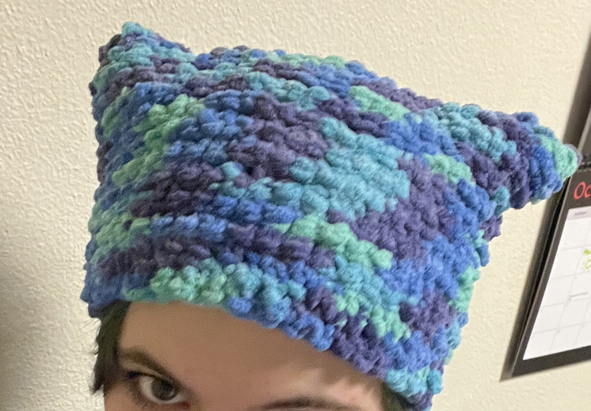
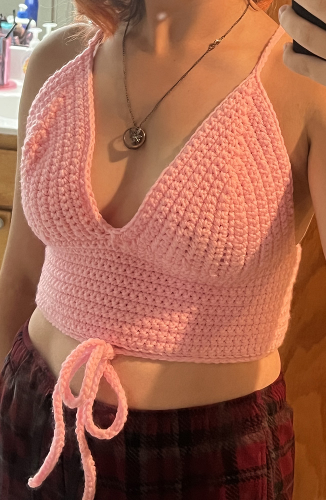
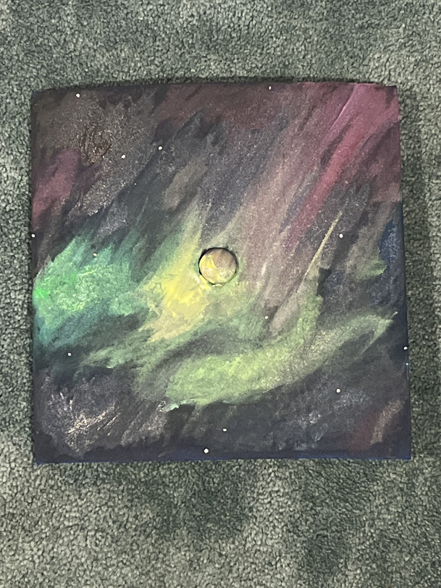
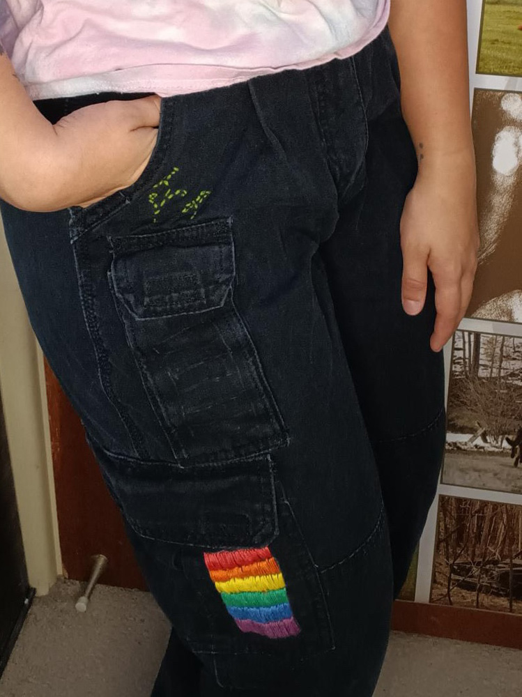

My favorite medium to work in,
I have worked with acrylic paints for a very long time. The opacity of the paint and how quickly it
dries allows me to play with bright colors, and add as many little details i'd like. Which is always many!
Watercolor Paintings:
A skill i have honed over a few years,
my favorite thing to do with watercolor is realism. I have alot of practice making plants, animals, and landscapes with this medium.
Gouache Paintings:
One things i love to do with gouache paints is really play with colors. Because of the brightness
i like to play with surealism when it comes to these paints.
Color pencil
and graphite pencil drawings provide alot of opportunity for depth. Alot
of my pencil pieces are portraits, or realistic drawings of things if find joy in.
Paint pen Drawings:
This is one of my
favorite art mediums to work in, and one where I really use colors in my style. They
also allow for alot of detail and pops of highlights.
Marker Drawings:
I use alcohol
markers for most of my pieces. This allows me to blend colors and layer
them as best fits my style and the piece. As is with alot of my pieces i
use the bright colors of the markers to add pops to my piece.
I have made cups,
bowls, and even teapots on a pottery wheel aswell as simply hand-made. My functional
pieces always feature something unique or whimsical in their design.
Sculpture Ceramics:
I also make ceramic pieces
that are purely for decoration. Usually my sulptures are hand-made and have some sort of theme to them.
Fusion Ceramics:
The most common
type of ceramic peice i've made, fusion ceramics refers to pottery that is
both functionla, but also serves a decorative purpose. I am always looking
for a way to add style and an interesting element to the art i make.
I have made alot of Crochet
animals for friends, and I have experience making a variety of animal forms through crochet.
I have also made animals in a variety of sizes.

Winterwear Crochet
I am
still fairly new to making winterwear, but i like to work with
fluffy materials to allow the clothes blankets and hats to keep you
warm, and interesting yarns to give the pieces character.

Summerwear+Accessorie Crochet
I usually work with a thinner
and lighter yarn than with my winterwear so it's not too stuffy/itchy. I am also fairly new to this type
of product but i'm learning new things with each project i finish.
Character art
is the thing that got me into the digital art world. I have drawn many o
f my friends orginal characters as well as plenty of my own, and usually have a very cartoonish style,
but have also delved into realistic character portrayals.
Promotional Graphics
I am currently
in school for Graphic design, and both proffesionally and academically I have
made everything from movie posters to email banners to poetry book spreads and beyond.
Graphic Art
I also really enjoy
using Graphic design to make interesting decorational pieces, and playing with
the confines of digital art to make art pieces witha unique and sleek feel.
One medium that I
dont work often in, but have so much fun when i do. I find that so
much emotion and expression can be conveyed through photo collages,
and it really encourages you to play with the strange.

Painting Objects
Painting personal
items, i find, is the simplest way to add whimsy and love to your everyday life.
I've painted pants, mugs, graduation caps, ceiling tiles, and much more. It's a beatiful
way to customize something you love, and own something that is wholly unique.

Embroidery Work
Embroidery
is another easy way to customize something you love and make it uniquely you.
i have experience ebroidering maaterials as tough as cargo pants and as delicate
as tote bag material.